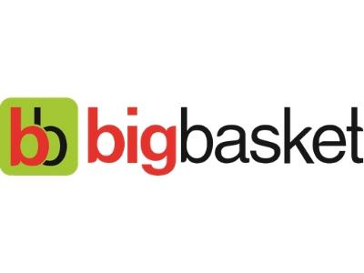

|
bigbasket.com allows you to walk away from the drudgery of grocery shopping and welcome an easy relaxed way of browsing and shopping for groceries. Discover new products and shop for all your food and grocery needs from the comfort of your home or office. No more getting stuck in traffic jams, paying for parking, standing in long queues and carrying heavy bags – get everything you need, when you need, right at your doorstep. Food shopping online is now easy as every product on your monthly shopping list, is now available online at bigbasket.com, India’s best online grocery store.
bigbasket.com (Innovative Retail Concepts Private Limited) is India’s largest online food and grocery store. With over 18,000 products and over a 1000 brands in our catalogue you will find everything you are looking for. Right from fresh Fruits and Vegetables, Rice and Dals, Spices and Seasonings to Packaged products, Beverages, Personal care products, Meats – we have it all.
Choose from a wide range of options in every category, exclusively handpicked to help you find the best quality available at the lowest prices. Select a time slot for delivery and your order will be delivered right to your doorstep, anywhere in Bangalore, Hyderabad, Mumbai, Pune, Chennai, Delhi, Noida, Mysore, Coimbatore, Vijayawada-Guntur, Kolkata, Ahmedabad-Gandhinagar, Lucknow-Kanpur, Gurgaon, Vadodara, Visakhapatnam, Surat, Nagpur, Patna, Indore and Chandigarh Tricity You can pay online using your debit / credit card or by cash / sodexo on delivery.
We guarantee on time delivery, and the best quality!
|

|